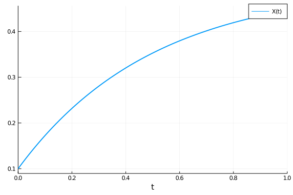
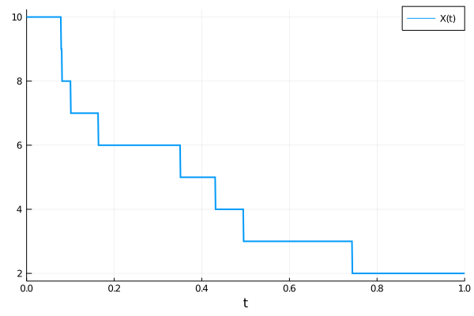

Model Simulation
Once created, a reaction network can be used as input to various problem types, which can be solved by DifferentialEquations.jl, and more broadly used within SciML packages.
Deterministic simulations using ODEs
A reaction network can be used as input to an ODEProblem instead of a function, using
odeprob = ODEProblem(rn, args...; kwargs...)E.g., a model can be created and solved using:
using DiffEqBase, OrdinaryDiffEq
rn = @reaction_network begin
p, ∅ → X
d, X → ∅
end p d
p = [1.0,2.0]
u0 = [0.1]
tspan = (0.,1.)
prob = ODEProblem(rn,u0,tspan,p)
sol = solve(prob, Tsit5())Here, the order of unknowns in u0 and p matches the order that species and parameters first appear within the DSL. They can also be determined by examining the ordering within the species(rn) and parameters vectors, or accessed more explicitly through the speciesmap(rn) and paramsmap(rn) dictionaries, which map the ModelingToolkit Terms and/or Syms corresponding to each species or parameter to their integer id. Note, if no parameters are given in the @reaction_network, then p does not need to be provided.
We can then plot the solution using the solution plotting recipe:
using Plots
plot(sol, lw=2)
To solve for a steady-state starting from the guess u0, one can use
using SteadyStateDiffEq
prob = SteadyStateProblem(rn,u0,p)
sol = solve(prob, SSRootfind())or
prob = SteadyStateProblem(rn,u0,p)
sol = solve(prob, DynamicSS(Tsit5()))Stochastic simulations using SDEs
In a similar way an SDE can be created using
using StochasticDiffEq
sdeprob = SDEProblem(rn, args...; kwargs...)In this case the chemical Langevin equations (as derived in Gillespie, J. Chem. Phys. 2000) will be used to generate stochastic differential equations.
Stochastic simulations using discrete stochastic simulation algorithms
Instead of solving SDEs, one can create a stochastic jump process model using integer copy numbers and a discrete stochastic simulation algorithm (i.e., Gillespie Method or Kinetic Monte Carlo). This can be done using:
using JumpProcesses
rn = @reaction_network begin
p, ∅ → X
d, X → ∅
end p d
p = [1.0,2.0]
u0 = [10]
tspan = (0.,1.)
discrete_prob = DiscreteProblem(rn, u0, tspan, p)
jump_prob = JumpProblem(rn, discrete_prob, Direct())
sol = solve(jump_prob, SSAStepper())Here, we used Gillespie's Direct method as the underlying stochastic simulation algorithm. We get:
plot(sol, lw=2)
Reaction fields
Each Reaction within reactions(rn) has a number of subfields. For rx a Reaction we have:
rx.substrates, a vector of ModelingToolkit expressions storing each substrate variable.rx.products, a vector of ModelingToolkit expressions storing each product variable.rx.substoich, a vector storing the corresponding stoichiometry of each substrate species inrx.substrates.rx.prodstoich, a vector storing the corresponding stoichiometry of each product species inrx.products.rx.rate, aNumber,ModelingToolkit.Sym, or ModelingToolkit expression representing the reaction rate. E.g., for a reaction likek*X, Y --> X+Y, we'd haverate = k*X.rx.netstoich, a vector of pairs mapping the ModelingToolkit expression for each species that changes numbers by the reaction to how much it changes. E.g., fork, X + 2Y --> X + W, we'd haverx.netstoich = [Y(t) => -2, W(t) => 1].rx.only_use_rate, a boolean that istrueif the reaction was made with non-filled arrows and should ignore mass action kinetics.falseby default.